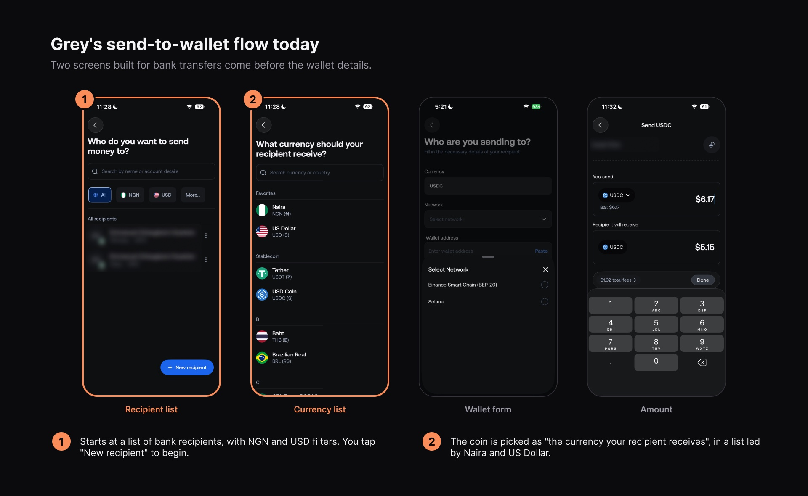
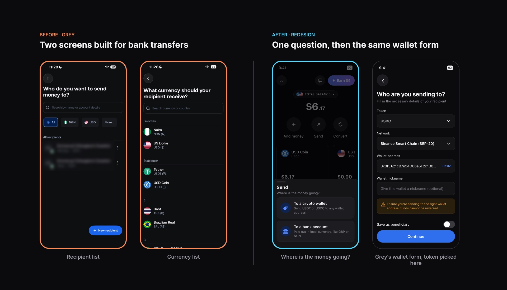
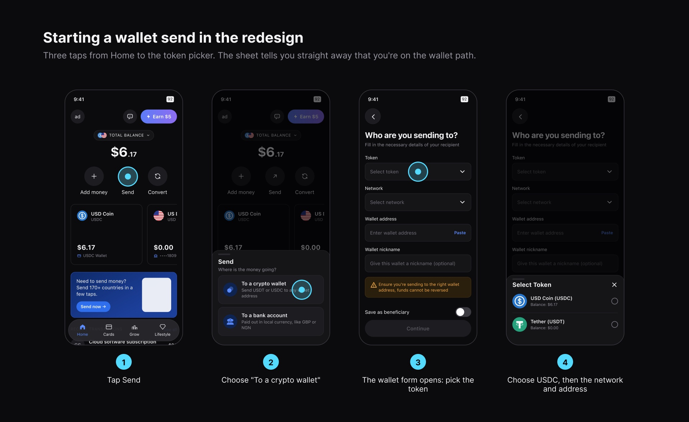
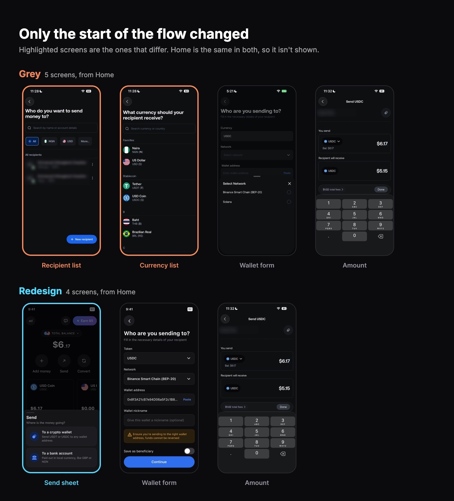
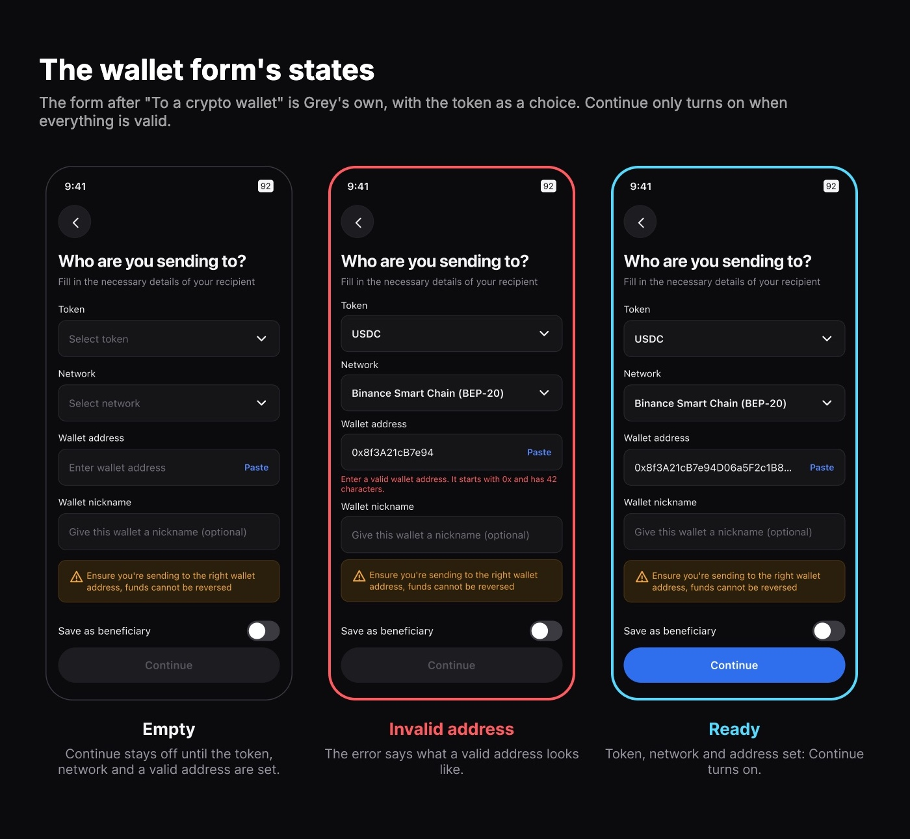
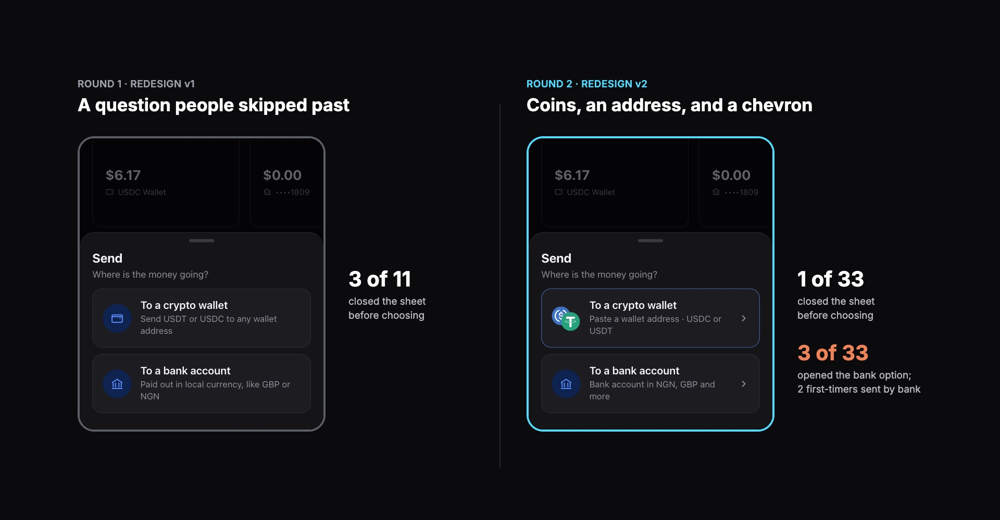
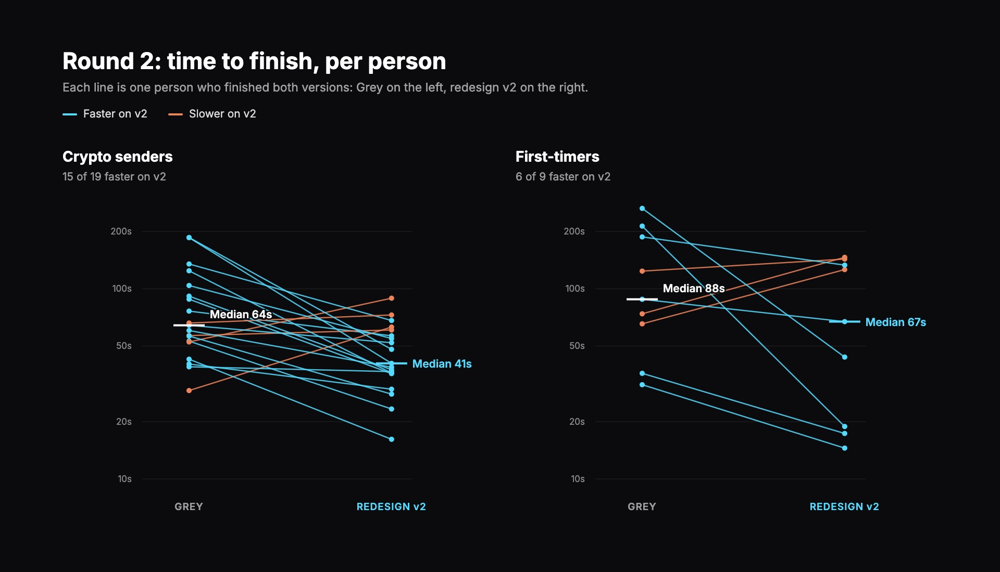

Redesigning how a stablecoin send starts, then testing it against the original
This is a self-initiated project for my portfolio. I am not affiliated with Grey, and Grey did not commission or review this work. Version A is my recreation of Grey's current flow, built from screenshots of the live app.
I started this after trying to send crypto to a friend's wallet on Grey. Tapping Send took me to my saved bank recipients, then a currency list led by Naira, and I wasn't sure I was in the right place. The process felt hectic. Grey lets people send USDC and USDT to crypto wallets, but its send flow is built around bank recipients and currencies. To send USDC to a friend's wallet, you go from Home to your USDC balance, tap Send, choose to add a new recipient, pick USDC from a list of currencies, fill in a recipient form, and then enter the amount.
Two points work against the task:
Nothing tells a wallet sender they're on the right path until the wallet form appears, in a flow where Grey's own form warns that "funds cannot be reversed". My tests confirmed the first point: 8 of 11 people hesitated at the bank recipient list in round 1, and in round 2, 26 of 37 attempts on Grey's flow tapped a bank recipient or a fiat currency before finding the wallet form.
Why this matters to Grey is my inference, not something I measured. Grey says it charges nothing extra on USDC sends beyond the network fee (Grey's blog, September 2024), so a failed send doesn't cost it a fee directly. The cost is trust: someone who finds sending stablecoins confusing, or loses money to the wrong network, may move their dollars to another app, along with the conversion and withdrawal fees Grey does earn.
I also read about 280 Play Store reviews of Grey. The ones about crypto mention fees, slow deposits and support, not the send flow, so the evidence for this problem comes from my own test.

In the redesign, Send opens a sheet that asks "Where is the money going?": "To a crypto wallet" ("Send USDT or USDC to any wallet address") or "To a bank account" ("Paid out in local currency, like GBP or NGN"). Choosing a crypto wallet opens Grey's wallet form straight away, where you pick the token and network and paste the address. A wallet send never sees a list of bank recipients or fiat currencies.
I also considered starting wallet sends only from the USDC or USDT balance screen. It was a smaller change, but anyone who taps the main Send button would still land on bank recipients. Destination first adds one tap before the first screen. I accepted that because it tells people straight away which path they're on, and it removes two screens built for bank transfers from every wallet send.


My first version also redesigned the wallet form, the amount screen, and added review and receipt screens. If it had won the test, I couldn't have said which change made the difference. Before running the test with participants, I cut it back to how the send starts. The wallet form, the amount screen and everything after them stay Grey's, so any difference in the test comes from that one decision.


I built a small usability lab: clickable phone prototypes of both versions, a consent and screening page, and a tracker that records what each person does. Everyone sent $5 of USDC to a friend's wallet on BNB Smart Chain in both versions, with the starting version balanced. Round 1, on 12 October, had 11 crypto senders. Round 2, on 13 and 14 October, compared Grey with v2 in two separate groups: 22 crypto senders, and 10 first-timers who had never sent crypto to a wallet. 32 people tried both versions and 30 finished both. Everyone was in Nigeria, on their phone; 8 of the 30 in round 2 had used Grey.
Reaching the end of the flow counts as completing the task. I judged only the choices the screens ask for, the path, the token and the network, not the amount: several people sent $6.02 so their friend would receive $5.00 after the fee, which is the maths, not the flow. I set the success targets before the test: completion of 80% or more, fewer errors, no critical errors, a typical time at least 20% lower, ease at least 1 point higher, and a clear majority preferring the redesign. Round 2 used the same targets.
With 11 crypto senders, asking where the money is going first made the send feel easier and cut the backtracking, and 9 preferred it. It looked faster, 58s against 36s, but not provably so with 11 people, and one person sent on the wrong network. Two findings shaped round 2: 3 of 11 closed the new sheet before choosing, and I had only tested people who already send crypto.
In round 1 the sheet's two options looked alike, and 3 of 11 people closed it before choosing. In v2 I changed only the sheet. The crypto option shows USDC and USDT coins and says what you'll need: "Paste a wallet address · USDC or USDT". The bank option names the account: "Bank account in NGN, GBP and more". Both got a chevron, so they read as paths, not labels. Everything else stayed the same, so the comparison with Grey still tests one decision.
I also added first-timers as a separate group. My guess is that Grey's growth in stablecoins depends on people who haven't sent crypto before, and a flow that only works for experienced senders wouldn't help them. Keeping the groups apart meant one group's result couldn't hide the other's.

Against the targets I set beforehand, v2 met five of six. It missed one, no critical errors: 9 of 34 attempts on v2 ended badly, the same share as Grey's 9 of 37, so by my own rule this isn't a full success.
| Measure | Grey | Redesign v2 | Target | Result |
|---|---|---|---|---|
| Completed the task | 84% (31/37) | 91% (31/34) | 80% or more, and at least Grey's | Met |
| At least one wrong turn or wrong pick | 76% (28/37) | 29% (10/34) | 25% lower than Grey | Met |
| Critical errors: wrong network, sent by bank, or not finished | 24% (9/37) | 26% (9/34) | None | Missed |
| Typical time to finish | 70s | 46s | 20% lower | Met: 34% faster, 21 of 28 people faster |
| Average ease rating (1 to 7) | 4.8 | 5.8 | 1 point higher | Met: +1.0 |
| Preferred | 1 | 24 | Clear majority | Met: 4 saw no difference |
"Typical" is the median. The time, ease and preference differences were each unlikely to be chance (paired tests, p of 0.01 or lower).

Crypto senders got faster and made fewer wrong turns, but rated v2 only 0.4 points easier: they already knew Grey's flow. First-timers felt it most: ease rose from 3.5 to 5.9, all 10 finished on v2 against 9 of 12 attempts on Grey, and all 10 preferred it.
People were faster on whichever version came second, 21 of 28 times. Comparing first attempts only, before any practice, the redesign still led: 53s against 79s for crypto senders, and 126s against 188s for first-timers, though these groups are small.
What v2 didn't fix: 4 people sent on Solana in v2 and 3 on Grey, in the network field both versions share. It is now the flow's biggest risk. The new sheet also added a mistake of its own: 2 first-timers sent the money by bank transfer.